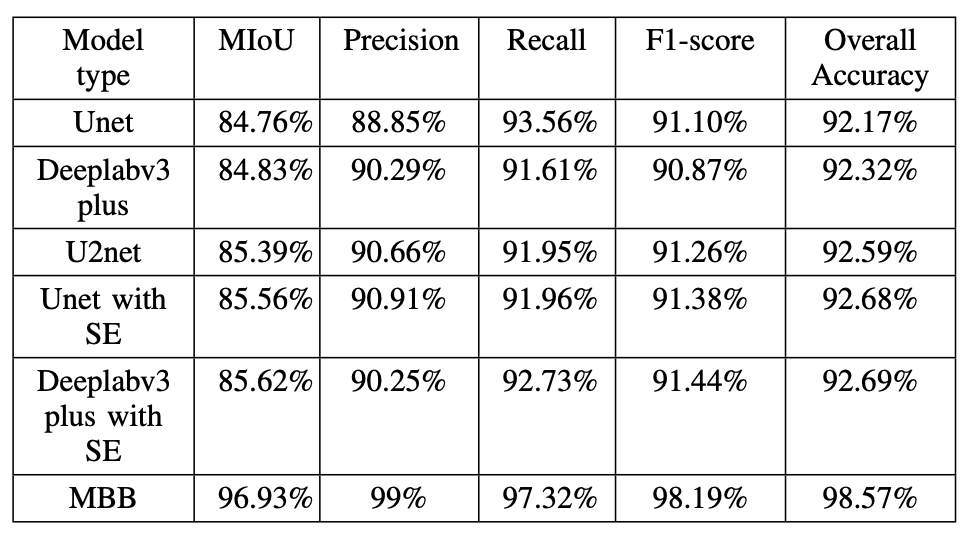
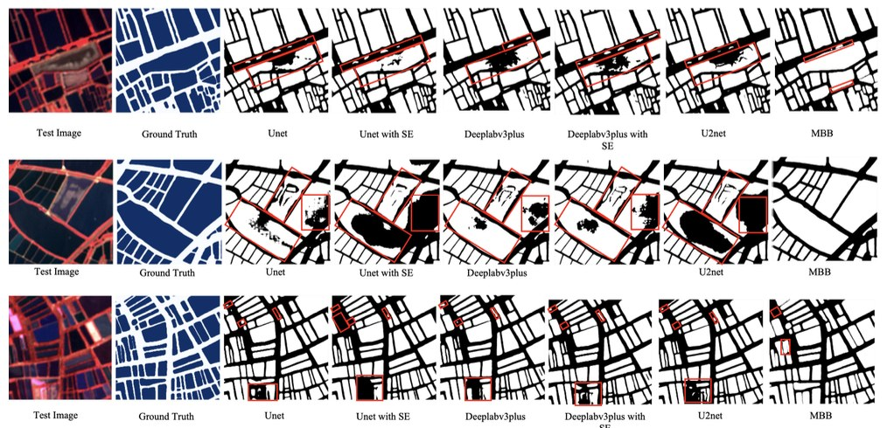

Detection · production pipeline
Aqua-Boundary
A distributed geospatial ML pipeline that detects and segments aquaculture pond boundaries from satellite imagery and emits production-ready vector GeoJSON.
- Role
- Sole engineer
- Sensor
- Sentinel-2 MSI L2A
AWS ODR · Planetary Computer - Region
- 4 districts
Andhra Pradesh, India - Models
- YOLOv8 → SAM ViT-H
6 trained & benchmarked - Result
- 94% mIoU
30 min → 2 min per tile
The problem
Data collection and surveying in aquaculture is still done by hand. It is labour intensive, slow, and prone to human error — and at delta scale, it simply does not finish. The proposal was to replace manual survey with boundary delineation driven by remotely sensed data.
Objectives
- Build a strong inland fisheries geospatial database.
- Modernise and strengthen the aquaculture value chain.
- Give value-chain stakeholders the means to monitor sustainability and drive innovation.
My role
Sole engineer on the pipeline. I manually delineated the boundaries that became the training set, trained and tuned the ML and DL models, designed the workflow architecture, built the inference stages, and took it from prototype to containerised deployment.
Data
| Source | What it gives |
|---|---|
| Sentinel-2 AWS & Planetary Computer |
Imagery across 12 spectral bands at roughly a five-day revisit, enough to observe the phenological and environmental changes that come with shrimp farming. High temporal and spectral resolution makes it well suited to aquaculture monitoring. |
| Ground truth Google satellite basemap |
Sentinel-2 scenes were visually interpreted and validated against the Google satellite basemap. |
The dataset for the whole study was created from scratch, through visual interpretation and manual delineation.

Experiments
The research ran across four districts of Andhra Pradesh known for aquaculture. Six models were trained and tested in total. The YOLO + SAM combination outperformed every other configuration.



What I built
- A geospatial training dataset created from scratch by manual delineation.
- Training and hyperparameter optimisation across six model configurations.
- An Xarray/Dask-based Sentinel-2 data extraction pipeline feeding the models.
- A two-stage detection-segmentation pipeline: YOLOv8 proposes pond regions, SAM ViT-H refines them into precise masks, which are then vectorised to GeoJSON.
- A Temporal-orchestrated workflow that splits the process into three stages on independent task queues, so each can be scaled and tuned separately.
- A FastAPI trigger-and-poll API over the workflow.
- Docker packaging with separate API and worker images.
How it works
Input is raster tiles pulled from S3. Output is GeoJSON boundaries written back to S3, alongside a rendered PNG for quick visual review.
API contract
| Request | Type |
|---|---|
| latitude | float |
| longitude | float |
| start_date | str — defaults to a fixed 3 or 6 month window ending today |
| end_date | str — defaults to a fixed 3 or 6 month window ending today |
| Response | Type |
|---|---|
| boundary_geojson | dict — the delineated pond boundaries |
| output_s3_key | str — GeoJSON location in S3 |
| image_output_s3_key | str — rendered PNG location in S3 |
| internal_data | dict — metadata carried across workflow activities |
Request sequence
Results
- Processes three 1.3 × 1.3 km images in about two minutes.
- Replaces an average of 30 minutes of manual digitisation per tile with two minutes of GeoAI segmentation.
- 94% mIoU sustained across four geographically distinct regions.